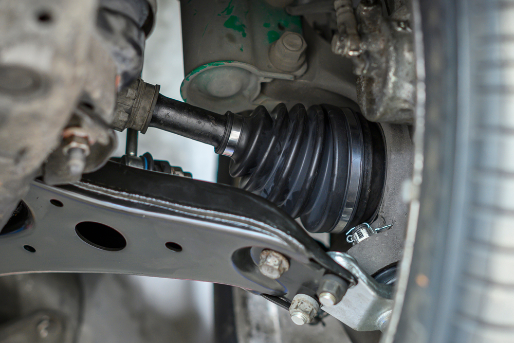

🥠Video Tutorials
🔉 Sound Examples
📄 PDF Guides

How to Replace Brake Pads
A quick video on safely changing brake pads at home.
🥠Watch Video

Engine Knocking
Listen to this knocking engine sound and compare it to yours.
Clunking in Suspension
This guide explains common causes of clunking under the car.
📄 View PDF
Squealing Brake Pads
Squealing often means worn pads or metal-on-metal contact.
Ticking from Valve Lifters
PDF guide for diagnosing ticking noises related to valve lifters.
📄 View PDF
Steering Noise Causes
Video on diagnosing power steering whining and groaning sounds.
🥠Watch Video
Rattling Muffler
Sound of a loose or rusted muffler shaking under the car.

Hissing from Vacuum Leak
Listen to this classic vacuum leak hissing sound example.

Air Intake Whistle
Watch how air leaks around the intake can create whistling sounds.
🥠Watch Video

Clicking CV Axle
CV joints often click when turning if they're worn out.
Steering Noises (PDF)
Guide to diagnose groaning or whining sounds in steering systems.
📄 View PDF
Fixing a Loose Muffler
Step-by-step repair of rattling exhaust brackets and hangers.
🥠Watch Video
Ticking from Valve Lifters
Typical ticking from worn or dirty valve lifters.
Grinding Brakes PDF
Understand the signs of severe brake wear and rotor damage.
📄 View PDF
Finding Vacuum Leaks
Learn how to detect leaks using sound and smoke testing.
🥠Watch Video
Buzzing Fuel Pump
Fuel pump buzz when turning the key, hear what’s normal vs. faulty.
Drivetrain Noise Guide
PDF overview of differential and axle noises while driving.
📄 View PDF
Gear Grinding Explained
Video showing bad shifting habits and how to avoid synchro damage.
🥠Watch Video
Buzzing Noise
PDF guide for diagnosing Buzzing Noise.
📄 View PDF
Clicking noise from worn CV joints
PDF guide for diagnosing clicking noise.
📄 View PDF
Whistling noises from Vacuum leaks
PDF guide for diagnosing whistling noises.
📄 View PDF